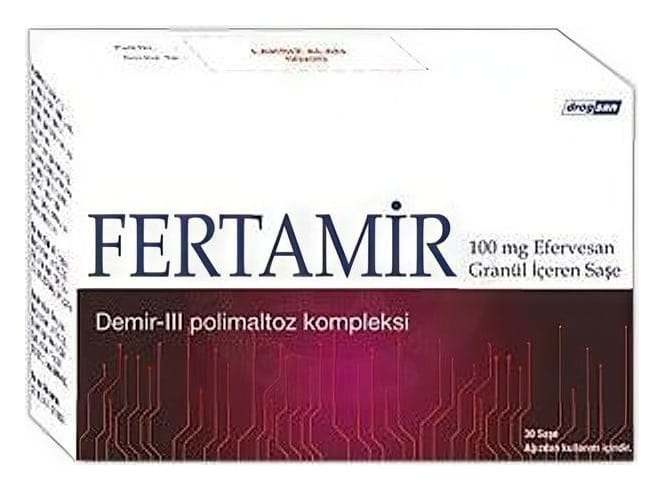

Fertamir 100 mg Efervesan Granül İçeren Saşe, 30 Adet

Ne için kullanılır
KT · Bölüm 1- FERTAMİR etkin madde olarak 307.69 mg demir III polimaltoz kompleksi (100 mg Fe +3 ’ e eşdeğer) içerir. Bu ilacı kullanmaya başlamadan önce bu KULLANMA TALİMATINI dikkatlice okuyunuz, çünkü sizin için önemli bilgiler içermektedir. - Bu kullanma talimatını saklayınız. Daha sonra tekrar okumaya ihtiyaç duyabilirsiniz. - Eğer ilave sorularınız olursa, lütfen doktorunuza veya eczacınıza danışınız. - Bu ilaç kişisel olarak size reçete edilmiştir, başkalarına vermeyiniz. - Bu ilacın kullanımı sırasında, doktora veya hastaneye gittiğinizde doktorunuza bu ilacı kullandığınızı söyleyiniz. - Bu talimatta yazılanlara aynen uyunuz. İlaç hakkında size önerilen dozun dışında yüksek veya düşük doz kullanmayınız.
- Oral çözelti hazırlamak için granül içeren 20 ve 30 adet saşedir. Granüller kahverengi renktedir. - Demir III hidroksit polimaltoz uygulaması, demir eksikliğinin neden olduğu anemilerde kan yapımındaki azalmayı ve bunun sonucunda oluşan etkileri ortadan kaldırır. - Değişik kökenli tüm demir eksiklikleri ile demir eksikliği anemisinin (kansızlık) tedavi ve profilaksisinde (korunmada); hamilelik, laktasyon (emzirme) ve çocukluk döneminde demir desteği tedavisinde kullanılır.